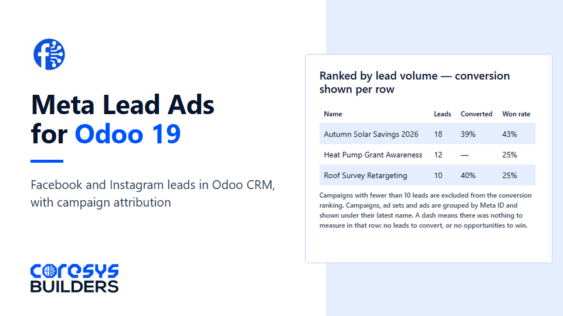
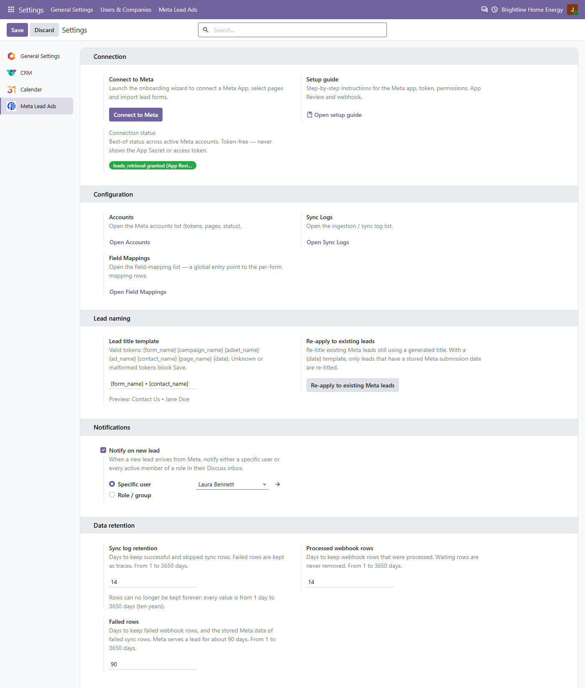
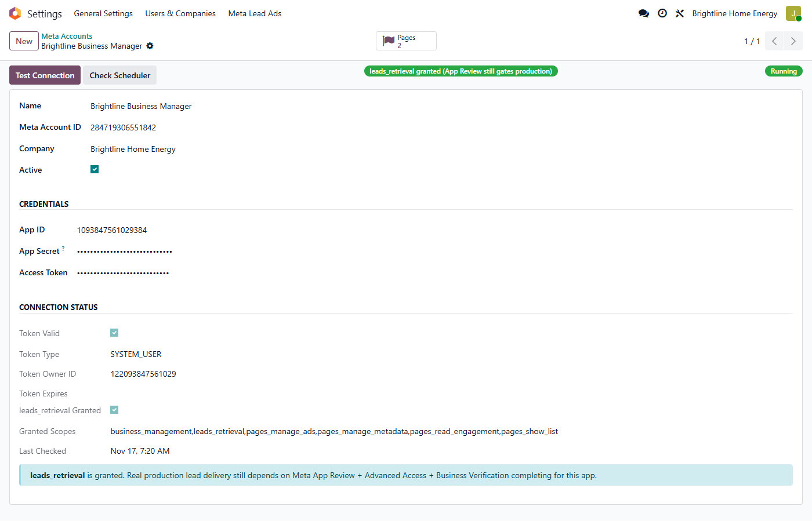
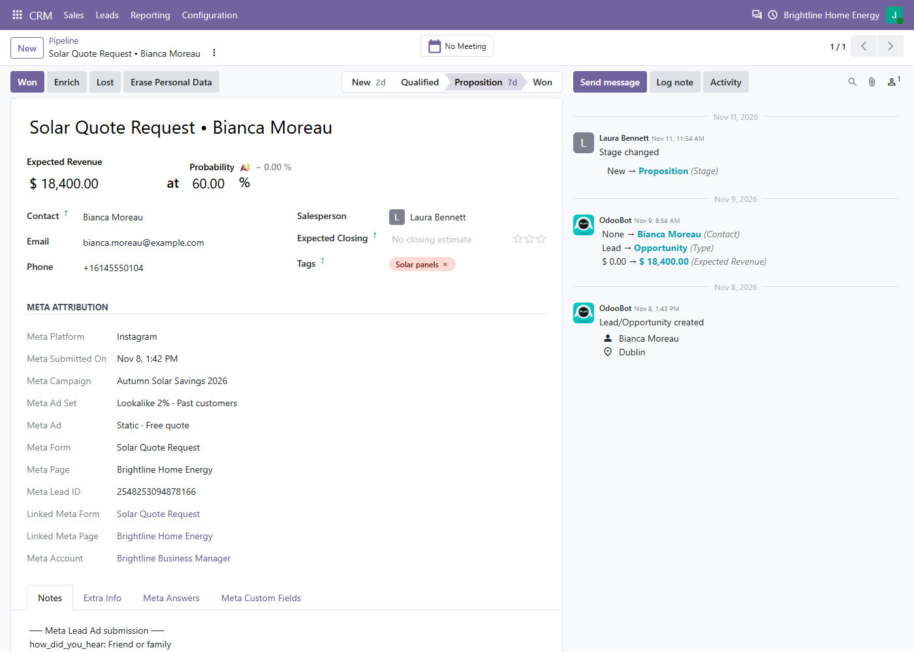
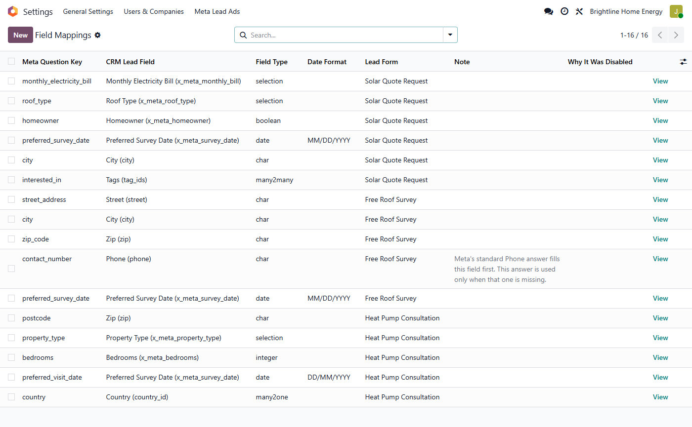
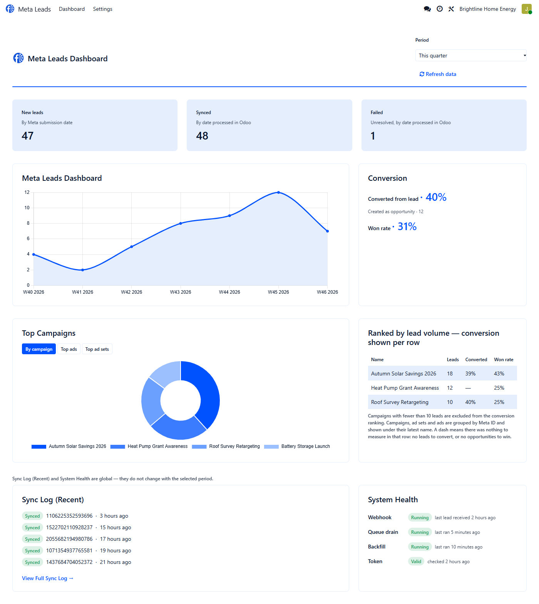
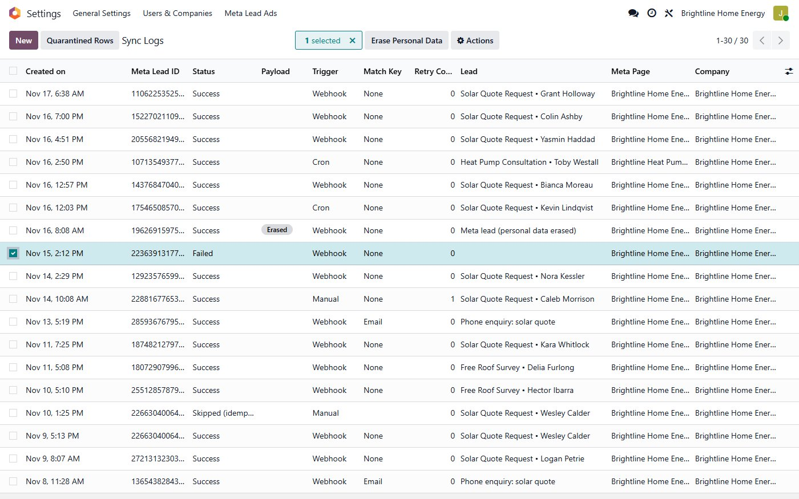

Facebook and Instagram leads arrive in Odoo CRM shortly after they're submitted, with the campaign, ad set, ad and form that produced them when Meta provides them. No CSV exports, no middleware.
This module connects Meta Lead Ads to your CRM through a signature-verified webhook for fast delivery and a scheduled backfill that re-checks each connected form, designed so a lead a missed webhook didn't deliver is picked up on the next run, as long as Meta still holds it. Both paths run through one ingestion service, and each Meta lead ID can create only one CRM lead, so webhook, backfill and Meta re-sends don't pile up duplicates.
Each Page's leads land in the company, sales team and salesperson you choose for it. A lead that fails to come in stays in the Sync Log with its error, ready to retry once the cause is fixed, and a Meta Admin can erase the personal data Meta brought into Odoo.
Fast, with a safety net. A signature-verified webhook hands each new lead to a queue that Odoo works through every minute; a backfill cron re-sweeps each form on a schedule. One CRM lead per Meta lead ID is enforced by a database constraint, not a best-effort check.
Attribution you can act on. The campaign, ad set, ad, form and Page names and IDs are recorded on each lead when Meta provides them, and mapped to Odoo UTM, so you can see which ad produced which opportunity. A name Meta doesn't return straight away is looked up again later.
Ready for several companies. Each Meta account sends its leads to the company you pick, and a Page can override it. Duplicate checks skip leads of other companies, new-lead alerts go only to users who can open the lead, and the dashboard counts the companies selected in the company switcher.
The right owner from the start. On each Page, choose a default salesperson, a sales team, and whether new leads arrive as leads or as opportunities. Form answers can't fill workflow fields such as the salesperson, team, stage or expected revenue, so the person filling in the form doesn't decide who owns the lead.
Recovery you can see. A failed lead keeps its Page and Meta lead ID in the Sync Log, and you can retry it from there or from the webhook queue. When Meta asks Odoo to slow down, the queue waits as long as Meta asks, up to a day. Leads of a Page you archived are held and fetched again once you reactivate it.
Privacy controls. Meta form answers follow the lead's access rules and are shown as plain text. A Meta Admin can erase the personal data Meta brought into a lead, stored copies in the sync log and webhook queue included, and log and queue rows are cleaned up after a retention period you set.
Careful with credentials. The App Secret and access tokens are restricted to administrators. The webhook checks Meta's signature over the raw request body before parsing anything, and the module doesn't write tokens or the App Secret to its logs. Token- and secret-shaped values are masked in the Meta error text it stores, and webhook requests larger than 64 KiB are refused.
Under Settings → Meta Lead Ads, the Connect wizard takes your App ID, App Secret and access token, validates them, and discovers your Pages and lead forms. On a database with several companies, you also pick the company that receives the connection's leads. Accounts, field mappings, sync logs, lead naming, notifications and data retention all live in one place, and Meta Admins without access to Settings find the same section under Meta Leads → Settings.

Each account shows its token validity, granted scopes, whether leads_retrieval is in place, and whether the queue drain and the backfill are running, with Test Connection and Check Scheduler buttons so you can confirm it yourself.

Each Page has its own Lead Routing: create its new leads as leads or as opportunities, and give them a default salesperson and sales team. On a database with several companies, a Company Override sends one Page's leads to a different company from its account's. The salesperson must have Sales rights in the company the leads go to, and if a default stops fitting later, for example because the user was archived, the Page shows a warning that says what is wrong. When a submission matches an existing open lead, that lead only gets the salesperson and team if it has none.
Leads come in as ordinary crm.lead records you can qualify and convert. A Meta Attribution section records the platform, campaign, ad set, ad, form and Page, the date and time the form was submitted when Meta provides it, and the originating Meta Lead ID. The Leads, Pipeline and Pipeline Analysis views gain Meta filters and group-bys — platform, campaign, ad set, ad, form and submission day — ready for list, pivot and graph reporting.

Custom form questions are stored on every lead. Map a question to a standard or custom CRM field — text, selection, checkbox, number, amount, date, or a link to existing records such as country or tags — and reuse the same field across all your forms. Or promote an answer into a new field from the lead itself. An answer that doesn't fit its field is kept on the lead rather than guessed. Dates are read as ISO dates or in the date format set on the mapping (DD/MM/YYYY unless you change it). Workflow fields such as the salesperson, sales team, stage and expected revenue can't be mapped.

A read-only dashboard shows leads over time, the share of leads converted from a lead to an opportunity, and the won rate across all opportunities (leads created directly as opportunities are shown as a separate count, as they skip the lead stage), a breakdown by campaign, and a ranking of your best performers. Lead counts follow the date each form was submitted on Meta, campaigns are grouped by their Meta ID, so two campaigns with the same name stay apart, and the figures cover the companies selected in the company switcher. System Health shows the webhook, the queue drain, the backfill and the token separately, each with a plain-language status such as Running, Quiet or Falling behind.

Each ingestion attempt (webhook, backfill or manual) is logged with its status, trigger, Page and the dedup key that matched. When a lead fails, fix the cause if there is one, then press Retry on its row, or select several rows and use Retry Selected; the same ingestion service processes them again. The webhook queue (CRM → Configuration → Webhook Events) has the same Retry. When Meta rate-limits lead reads, waiting leads resume once Meta's wait is over, and a Meta Admin can resume them sooner. A lead you delete or merge in Odoo is skipped by the syncs, and a deleted one can be restored from CRM → Configuration → Removed Meta Leads.

Meta form answers follow the lead's access rules, so a salesperson who can't open a lead can't read its answers either, and answers are shown as text, not HTML. A Meta Admin can press Erase Personal Data on a Meta lead, or on up to 200 selected in the Leads or Pipeline list, to remove the contact details, mapped answers, the Meta answer block and the stored Meta payloads; the stage, salesperson, revenue and campaign attribution stay. Under Data retention, you choose how long processed sync and webhook rows are kept (14 days by default), and how long failed webhook rows and the stored Meta data of failed sync rows are kept (90 days by default).
crm, utm and mail modulesrequests libraryBefore going live, Meta requires App Review with Advanced Access for leads_retrieval (plus pages_show_list, pages_manage_metadata and pages_read_engagement) and Business Verification. An app in Development Mode returns test leads only, so it's worth starting the review early.
Click a question to show the answer.
Yes. Lead ads on Facebook and on Instagram use instant forms, and the module reads leads from those forms through the Page's connection, so the placement an ad runs in (feed, stories, reels or another) doesn't change how its leads are fetched. Instagram lead ads use the instant form of the Facebook Page they are published from, and each lead records whether it came from Facebook or Instagram when Meta reports the platform.
For production, your Meta app needs Advanced Access for leads_retrieval (plus pages_show_list, pages_manage_metadata and pages_read_engagement) and Business Verification; until then Meta only delivers test leads. Each Instagram account must be linked to a Facebook Page connected in the module.
Usually within a few minutes, once the webhook and Odoo's scheduled jobs are running. Meta notifies Odoo through a webhook when a form is submitted, and a scheduled job turns new submissions into CRM leads every minute. As a safety net, a backfill job re-checks each connected form every 15 minutes (adjustable) and a daily wider sweep looks for leads Meta made visible late, so a lead a missed notification didn't deliver is picked up on a later run, as long as Meta still holds it.
This needs a publicly reachable HTTPS URL for your Odoo and Odoo's scheduled jobs running, which is standard on Odoo.sh and correctly configured on-premise servers.
Yes. Name, email, phone and company name are filled in automatically. Any other question can be mapped, per form, to a standard or custom lead field: text, selection, checkbox, number, amount, date, or a link to existing records such as a country (by name or ISO code) or tags. The same field can be filled from several forms, and any captured question can be turned into a new custom field from the lead.
An answer that doesn't fit its field, such as an unknown option, is kept on the lead as a Meta answer rather than guessed. Workflow fields such as the salesperson, sales team, stage and expected revenue can't be mapped: the salesperson and team come from the Page's routing instead.
Not always. Retry runs the lead through the same ingestion again, from the copy Odoo stored or, once that copy has expired, by fetching it from Meta. You can retry from a Sync Log row or from the webhook queue. That clears temporary problems such as a timeout, a rate limit (the retry waits as long as Meta asks), or a token that has since been renewed. Other failures need a fix first, for example a missing permission or a Page the token can no longer read. A lead whose Page is archived in Odoo is held until you reactivate the Page, and is then fetched again on its own. A lead Meta no longer returns can't be fetched again once its stored copy has expired, and a lead whose personal data was erased can't be retried. The Sync Log shows the error on each row, so you can fix the cause and then retry.
No. Meta keeps lead data for about 90 days, so the backfill and the daily wider sweep can only fetch leads Meta still holds. A newly connected form's first sync looks back 30 days by default (adjustable). If a form's listing from Meta comes back incomplete, that form keeps its position instead of skipping ahead, and after a few incomplete runs in a row it is flagged in the Sync Log.
No. A database connects to one Meta app, because Odoo checks each webhook call with that app's App Secret. You can connect several Pages and lead forms through it. A different App ID is refused while accounts of the current app are active.
Yes. Each Meta account belongs to a company and its leads are created there, unless a Page has a Company Override that sends them to another company. Duplicate checks look only at leads of that company or with no company, new-lead alerts go only to users who can open the lead, and the dashboard counts the companies selected in the company switcher. All accounts share the database's one Meta app.
Usually not. Each Meta lead ID creates at most one CRM lead. A new submission is first matched against open leads (active and not won) of the same company: by email address, compared exactly apart from letter case and surrounding spaces, then by phone number, read in the lead's country or, when the form gives none, the company's country. So +20 10 1234 5678 and 010 1234 5678 match for a company in Egypt. A match is updated instead of a new lead being created, and the Sync Log records which key matched. A lead in a won stage, or one in another company, isn't matched, so a new lead is created.
Yes, a Meta Admin can erase it. Erase Personal Data on a Meta lead, or on up to 200 leads selected in the Leads or Pipeline list, removes the contact details, mapped answers, the Meta answer block and the stored Meta payloads, also for Meta leads merged into it. The stage, salesperson, revenue and campaign attribution stay, and the linked contact and hand-written messages are not changed, so handle those separately. An erased lead can't be retried. Sync and webhook rows that didn't become a lead have the same button.
Under Settings → Meta Lead Ads → Data retention, successful sync rows and processed webhook rows are removed after 14 days by default, and failed webhook rows and the stored Meta data of failed sync rows after 90 days; each period can be set from 1 to 3650 days. Retention covers the module's logs and queue only: leads stay in CRM until you erase or delete them.
Uninstalling removes promoted fields and their values; export them first. The fields affected are the ones the module created when you promoted an answer, plus any custom field whose technical name starts with x_meta_ and that a Meta field mapping fills.
The Meta details on each lead (campaign, ad set, ad and form IDs and names, submission time, stored Meta answers) and the module's sync logs and settings are removed too, and the Instagram source and Paid Social medium it added are deleted, which leaves leads that used them with an empty Source and Medium. Leads themselves stay in CRM. Other custom fields are kept, except a custom field that is computed from, related to, or the one2many inverse of a promoted field: Odoo removes that field and its values together with the promoted field, so export it too. A promoted field that another module, such as Studio, also owns is kept. If you customized a view to show a promoted field, check that view afterwards: Odoo removes the field but can leave the view pointing at it, so edit the view to take the field out.
Yes. Each Meta lead stores the campaign, ad set, ad, form and Page names and IDs, the platform, and the date and time of submission, when Meta provides them. The campaign is also mapped to Odoo's standard UTM source, medium and campaign. The Leads, Pipeline and Pipeline Analysis views gain Meta filters and group-bys (platform, campaign, ad set, ad, form, submission day) for list, pivot and graph reports, alongside the built-in analytics dashboard.
No paid apps: it uses only Odoo's standard CRM, UTM and Discuss modules and works on Community and Enterprise. No extra Python packages: it uses the requests library bundled with Odoo.
You do need a Meta developer app and Business Manager account (free), the Meta review steps above, and a public HTTPS address for the webhook. Hosting must be Odoo.sh or on-premise, as Odoo Online does not allow third-party apps.
The module talks to Meta through a single pinned Graph API version (currently v23.0), so moving to a newer version is a contained change that we test against the Lead Ads fields before release. Compatibility updates for your purchased version are published through the Odoo Apps Store at no extra cost for as long as Meta supports the Lead Ads API.
Your purchase includes email support at info@coresysbuilders.com for installation questions and bug fixes, and a step-by-step setup guide built into the module (Settings → Meta Lead Ads → Setup guide) covering the Meta app, permissions, App Review, the webhook and Page subscription, and then companies, Page routing, the health indicators, recovering failed leads and data retention.
Hands-on help configuring your Meta Business account and webhook, or deploying to production, is available as a paid service. Meta's own review steps (App Review and Business Verification) are completed in your Meta account, and their timing is set by Meta.
CoreSys Builders. © 2026, all rights reserved. Licensed under the Odoo Proprietary License v1.0 (OPL-1); redistribution and resale are not permitted. Questions and feature requests are welcome.